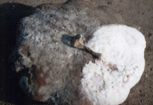
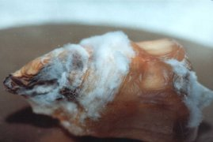

Fehérpenészes rothadás
Sclerotinia sclerotiorum
A betegségnek több száz gazdanövénye van, többek között a
gyökérzöldségek, burgonya, bab, paprika, paradicsom stb. A károsítás igen
változatos: a burgonya, gyökérzöldségek esetében a föld alatti részeket
rothasztja, a paprikán viszont a szárat támadja meg. A fertőzés jellegzetes tünete a
vattaszerű, vastag fehér penészgyep, amelyben hamarosan megtalálhatók a gomba
fennmaradásához szükséges néhány mm-től néhány cm átmérőjű szürke kemény
képletek, az ún. szkleróciumok. Ezek a talajba jutva évekig fertőzőképesek
maradnak.
Védekezés:
- Fertőzött területre a kórokozó gazdanövényét több évig ne ültessük.
- A fertőzés tüneteit mutató töveket az állományból haladéktalanul távolítsuk
el és semmisítsük meg. Csak egészséges gyökérzöldséget tároljunk be és tartsuk
be a tárolási feltételeket.
